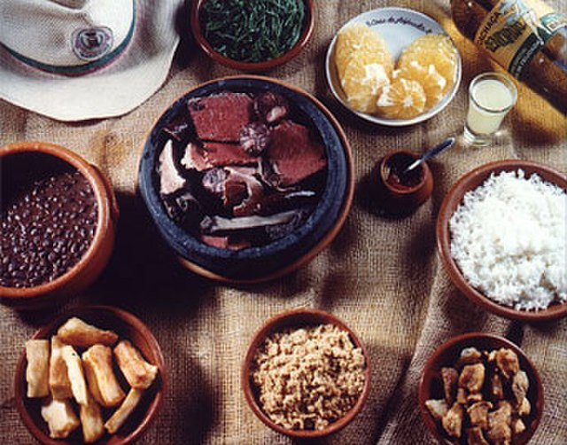
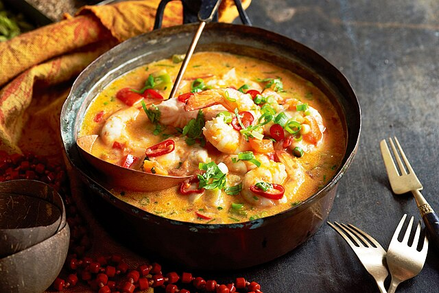
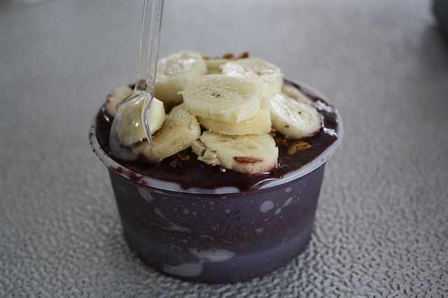

My Favorite Brazilian Dishes
About
Brazil is a country with a rich culinary tradition. As a Brazilian, I could not let the oppotunity pass of talking about this great cousine!
Dishes
These are some of my favorite dishes from Brazil.
- Feijoada
- Moqueca
- Açaí
- Pão de Queijo
- Brigadeiro
Here are some pictures of this bealtiful dishes quoted above:
  